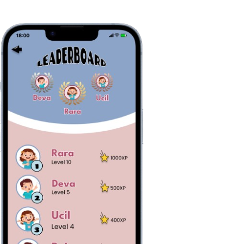

ZOOBEE
(Zoom on English and Be Excellent)
UI/UX Designer
Figma
Oct 2024 - Nov 2024
Project Description
ZOOBEE (Zoom on English and Be Excellent) is an academic project developed as part of the Human-Computer Interaction course, focusing on the design of user-centered and accessible interfaces. The project aimed to explore how interface design can support effective human interaction by considering user behavior, usability principles, and accessibility. Through this project, the interface was designed to ensure that users can interact with the system efficiently, intuitively, and comfortably, aligning with core Human-Computer Interaction concepts.
Learning Categories & Teacher Selection
The main menu allows users to choose English learning categories such as animals, fruits, professions, foods, and more. Users can also select available teachers they want to learn with, creating a more personalized and guided learning experience.

Leaderboard
The leaderboard feature enables users to track their learning progress through a ranking system based on quiz results. This feature helps users measure their performance, stay motivated, and improve their English skills through friendly competition.
Interactive Learning
This feature helps users learn English vocabulary from various categories such as animals, foods, and professions. Each learning session includes visual content and audio pronunciation to guide users in understanding and practicing correct English pronunciation.

Quiz & Assessment
The quiz feature is designed to evaluate user's understanding of the learning materials. Through interactive questions, users can test their knowledge, review what they have learned, and track their progress based on quiz results.

Process
Problem Identification
Identified relevant problems related to user interaction and accessibility as the foundation of the project. This phase focused on understanding how users interact with digital interfaces and determining challenges that could be addressed through effective UI/UX design.
User Research
Conducted user research to explore the needs, behaviors, and expectations of the target users. Insights gathered from this phase were used to define design requirements and ensure the interface aligned with Human–Computer Interaction principles.
UI Design
Translated user requirements into a structured visual interface using Figma. The design process focused on clarity, accessibility, and ease of interaction, ensuring that the interface could be effectively accessed and understood by users.
Usability Testing
Tested the completed design with representative users to evaluate usability, interaction flow, and overall user experience. This phase helped identify potential usability issues and interaction barriers within the interface.
Evaluation
Analyzed the results of usability testing to assess the effectiveness of the interface. Feedback from users was used to refine and improve the design, ensuring better alignment with user needs and Human-Computer Interaction standards.